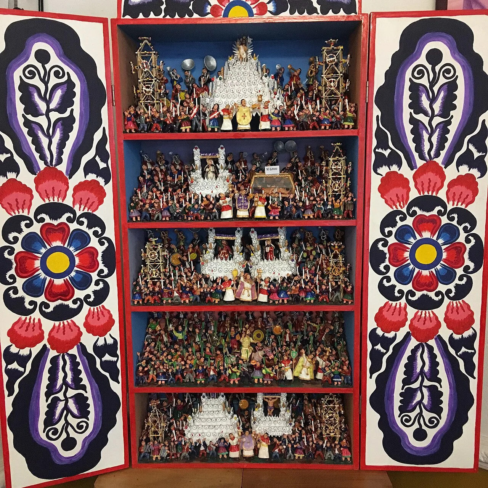
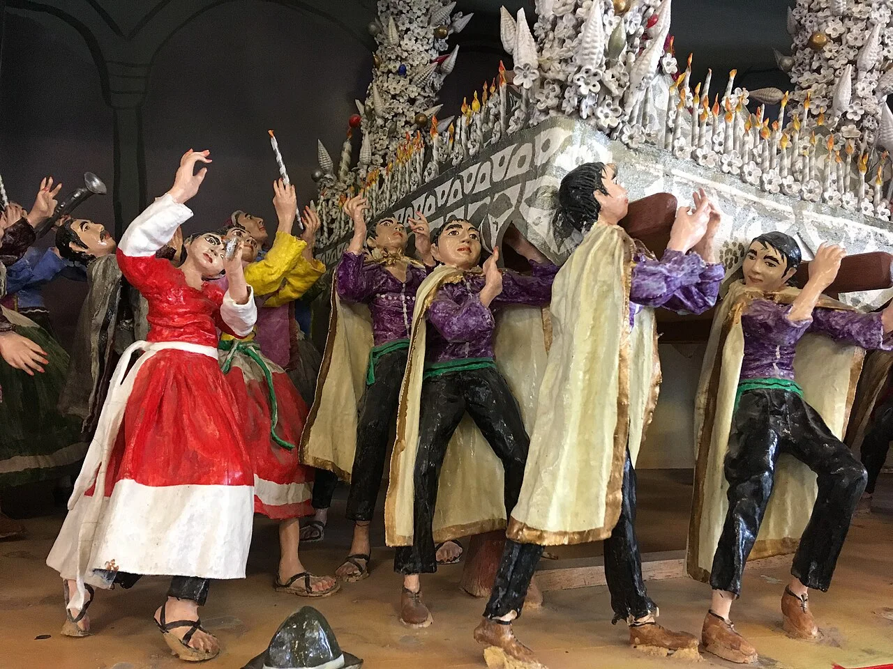

Las puertas del retablo no son un marco neutral. En la fotografía del ejemplar abierto, los motivos de sus dos hojas anuncian una composición antes de entrar en las escenas interiores. Abrir modifica la superficie disponible y la relación entre centro y lados. La caja no se limita a transportar figuras: decide cómo comienza el encuentro con ellas.
El Ministerio de Cultura del Perú vincula el retablo ayacuchano con los cajones de San Marcos y explica la intervención de Joaquín López Antay en el desarrollo de escenas costumbristas para otros públicos. El cambio de destinatario no exigió abandonar todo el formato. La estructura conocida pudo alojar otros relatos. La técnica aparece aquí como una capacidad de transformación, además de una forma heredada. [1]
La caja divide y reúne. Los niveles permiten introducir varias escenas sin que todas ocupen el mismo plano, mientras las puertas mantienen una unidad exterior. Desde el diseño editorial, el parentesco con una publicación es concreto: hay un orden de acceso, una distribución de atención y una relación entre partes. No implica que todas las escenas deban leerse como páginas consecutivas; la mirada puede comparar simultáneamente zonas distintas.

.jpg){kind=link}
El relieve añade otro problema. Una figura situada delante puede ocultar a otra, de manera que la densidad necesita resolver qué conserva visibilidad. La segunda fotografía, identificada como un detalle de procesión, permite observar cuerpos próximos, diferencias de altura y un fondo cargado de información. La acumulación tiene que organizarse para que una acción siga siendo reconocible.
En 2024, la PUCP presentó una exposición sobre retablos que dedicaba atención tanto a las puertas como a la memoria de sus autores. Incluía una sección sobre la familia Jiménez y sus piezas testimoniales, además de otras interpretaciones contemporáneas. Ese recorrido curatorial permite discutir usos distintos del mismo dispositivo sin asumir que todos los retablos cuentan una historia equivalente. [2]
Una escena costumbrista, una imagen religiosa y un testimonio pueden compartir herramientas y exigir modos diferentes de lectura. La calidad de una composición no depende de atribuir a todas una intención de denuncia. Tampoco conviene reducir el testimonio a una decoración dramática. Identificar obra, autor y contexto permite que el argumento se apoye en una pieza, en vez de convertir el formato entero en una alegoría.
La pintura exterior merece atención propia. Una puerta puede establecer ritmo, simetría o contraste con la escena que protege. El interior no tiene por qué ser el único lugar donde está el trabajo significativo. En una fotografía centrada exclusivamente en las figuras, el retablo pierde una parte de su funcionamiento material: cerrar, guardar, transportar y volver a abrir.

.jpg){kind=link}
La pequeña escala tampoco garantiza sencillez. Al reducir una figura es necesario decidir qué rasgo permite reconocer una postura o una acción. Un gesto demasiado fino puede desaparecer; una proporción alterada puede aumentar su legibilidad. La destreza está en resolver esa traducción con los materiales disponibles, no en reproducir una anatomía en miniatura con idéntica exactitud en todos los detalles.
Para documentar un retablo harían falta vistas que conserven exterior, interior y detalles, además de una escala comprensible. Una sola imagen frontal puede ser suficiente para descubrirlo y escasa para estudiarlo. También hacen falta créditos separados para la obra y para su fotografía. La facilidad con que circula una imagen no debería convertir un trabajo de autor en un ejemplo anónimo de artesanía nacional.
El retablo permite comprender una idea fértil de edición: seleccionar elementos, darles profundidad y decidir qué relaciones podrán verse al mismo tiempo. La caja acota el mundo que presenta y las puertas hacen visible ese límite. Su potencia narrativa no depende de fingir que contiene una realidad completa, sino de volver precisas las escenas que escoge mostrar.
Fuentes.
- Ministerio de Cultura del Perú — conocimientos, técnicas e iconografía del retablo ayacuchano, 13.06.2019
- PUCP / Museo de Artes y Tradiciones Populares — Retablo. Cajón de maravillas, exposición documentada en 2024
Lectura documental y visual. No se atribuyen los retablos fotografiados a los artistas mencionados sin una identificación de la obra. La exposición de 2024 es un antecedente, no una invitación vigente.
Fuentes consultadas el 15.11.2026. Análisis e interpretación: RUMMOR. Edición privada para revisión.